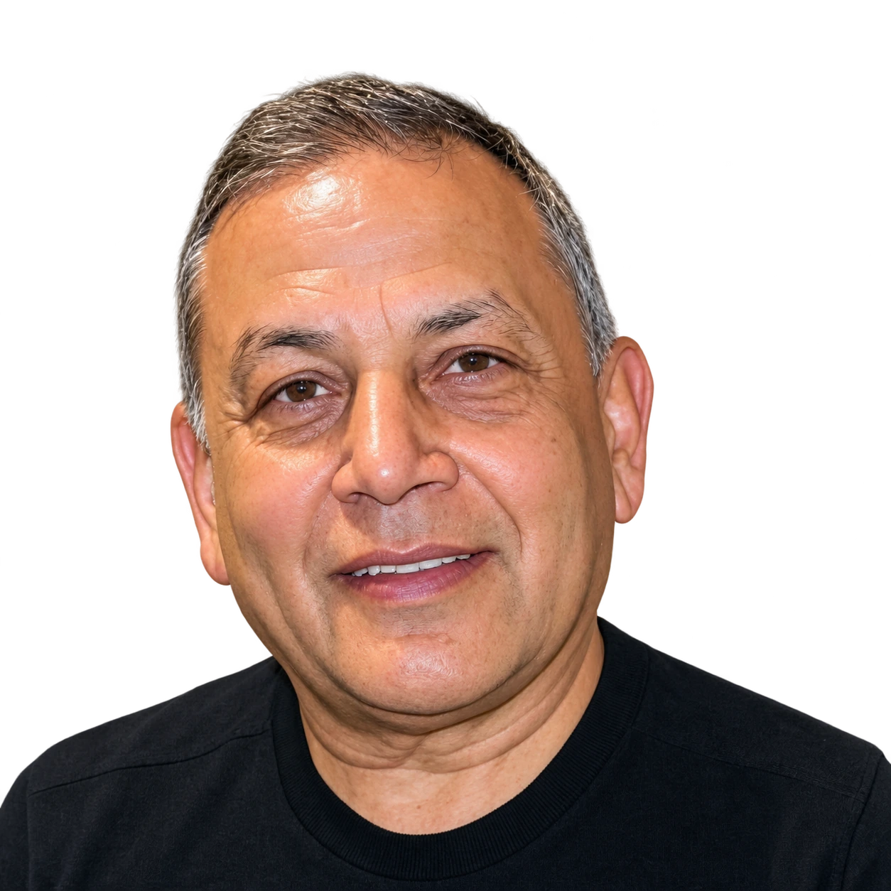
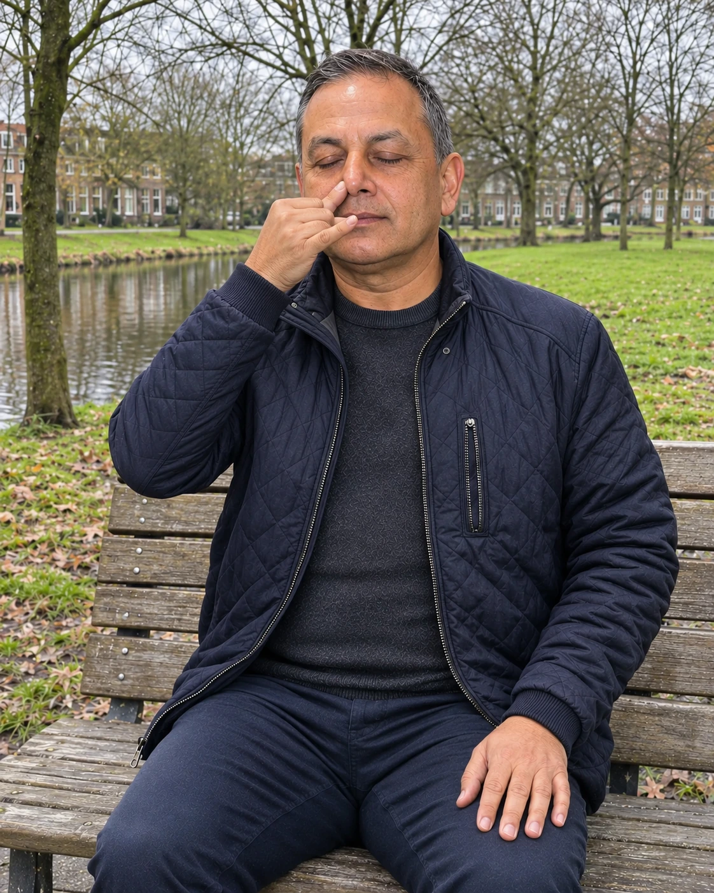

S
Sleep
Make restorative sleep the foundation of your daily recovery.
Hi, I’m Sanjiv Beri, Founder of HEALTHSPAN.
I help ambitious people who carry responsibility build the capacity to live, lead and contribute with strength, clarity and emotional steadiness—for decades to come.

“My biological age tests 20 years younger.”
Sanjiv describes this personal result as part of a system he has studied, practised and refined for more than a decade.
A self-reported personal result. Individual outcomes vary.
Busy weeks become your baseline. You keep showing up, even when your energy and recovery feel different.
If this feels familiar, it may be time for a more deliberate approach.
You’re in your 40s, 50s, 60s or beyond, carrying responsibility for a company, a team or a family.
Build a system that supports
the life you want to lead.
A connected approach to everyday habits, recovery and long-term resilience.
Make restorative sleep the foundation of your daily recovery.
Build a consistent daily rhythm and move with intent.
Explore breathwork and practical routines for responding to stress.
Bring greater attention to recovery, nutrition and the habits that sustain you.
Bring the foundations together in a repeatable system for the years ahead.
Explore your priorities with Sanjiv and see whether HEALTHSPAN is the right fit.

I’m Sanjiv Beri, a Longevity Performance Strategist. My work brings together my interest in healthspan, personal development and sustainable performance.
“I do not sell hacks.Connect with Sanjiv on LinkedIn
I build capacity.”
HEALTHSPAN is for individuals who want long-term strength, meaningful progress and practical tools they can use daily.
Discuss the program with SanjivIt is about extending the years
you can perform at your best.
Start a conversation, or request Sanjiv’s Longevity Performance diagnostic by emailing the word “HEALTHSPAN.”
The diagnostic request opens your email app. Prefer to write directly? sanjiv@berinet.com